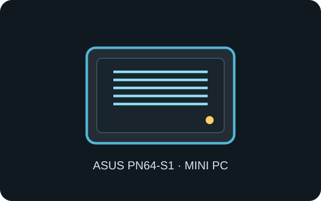

[ IDENTIFIED SYSTEM // ASUS MINI PC ]
ASUS ExpertCenter PN64-S1
120 × 130 × 58 mm (W × D × H), approximately 0.75 kg; PN64-S1 is an Intel-based barebone system and suffix/configuration options vary by region.

MODEL TYPE: ExpertCenter PN64-S1 barebone. Confirm the rear I/O module and exact processor option; PN64 revisions are not assumed interchangeable.
Specifications & fit
| Dimensions / type | 120 × 130 × 58 mm (W × D × H), compact barebone desktop system. |
|---|---|
| Board / power | Proprietary mobile-processor system board; external 19 V adapter up to 120 W by configuration. Not a standard ITX board or replaceable ATX PSU. |
| Drive bays | One M.2 2280 NVMe position and one 2.5-inch SATA position (7 mm drive clearance reported for PN64); verify the PN64-S1 carrier and bundle. |
| Expansion | No internal PCIe card slot; two SO-DIMM sockets and M.2 WLAN/storage positions. Rear configurable I/O changes external connectors only. |
| Thermal / maintenance compatibility | Active mobile-CPU cooling requires open side and rear airflow. Disconnect the DC adapter before service; preserve the upper drive bracket, wireless leads and fan duct, and avoid obstructing ventilation in a VESA mount. |
Compatibility & preservation notes
Check PN64-S1-specific ASUS support materials before ordering a case, board, fan or rear port insert; barebone and configured retail variants can use different accessories.
- Use only the rated external adapter and the documented DC input; do not substitute the supply based only on plug fit.
- Maintain the system’s blower/heatsink path and retain mounting screws and the storage carrier in their original positions.
Manufacturer specifications & service sources
- ASUS — ExpertCenter PN64 technical specificationsManufacturer specification family; verify PN64-S1 suffix and local configuration.
- ASUS Support — ExpertCenter PN64 manualsManufacturer manual and download page for installation and service reference.